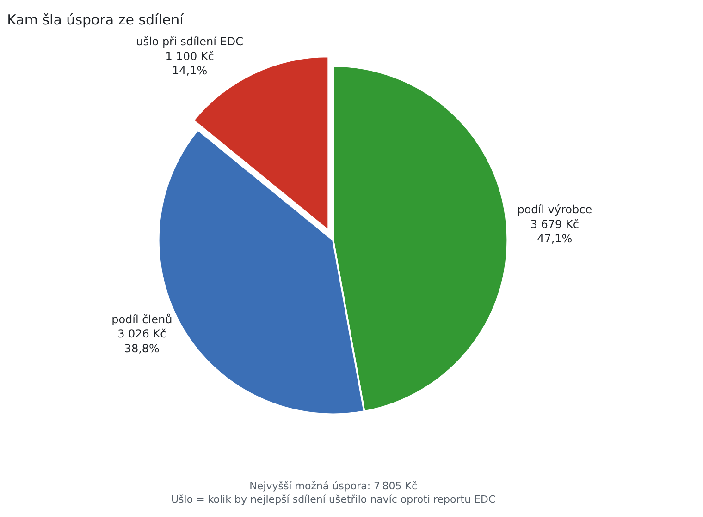
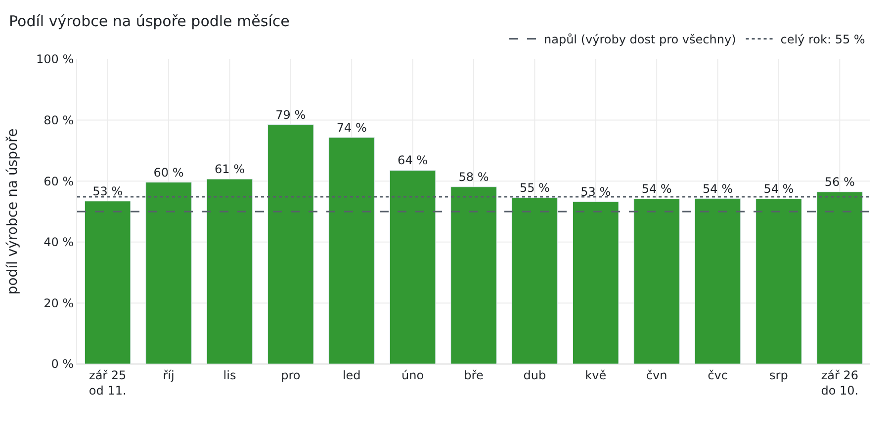

Sdílení elektřiny · UCEEB ČVUT v Praze
Spravedlivá cena sdílené kilowatthodiny
V minulém článku jsme ukázali, jak rozdělit výrobu mezi členy skupiny sdílení do poslední kilowatthodiny. Zbývá otázka peněz: kolik má člen za sdílenou kilowatthodinu zaplatit výrobci. Elektroenergetické datové centrum (EDC) to neřeší, cenu si členové sjednávají sami. Ukážeme pravidlo z teorie her, Shapleyho hodnotu, které rozdělí úsporu ze sdílení podle toho, co kdo skupině přináší, a vysvětlíme, proč je spravedlivé.
Kilowatthodiny rozdělí EDC, peníze smlouva
Výpočet EDC končí u kilowatthodin. Pro každou čtvrthodinu určí, kolik z výroby připadne kterému členovi. Za tuto elektřinu člen nezaplatí prodejci cenu silové elektřiny, distribuční poplatky ale platí dál. Výrobce ji naopak neprodá za výkupní cenu obchodníkovi, který od něj přetoky vykupuje.
Kolik za sdílenou elektřinu zaplatí člen výrobci, EDC ani prodejci neřeší. Řídí se to smlouvou o sdílení, kterou si členové uzavřou mezi sebou [1]. V rodině se často sdílí zadarmo. Jinde se nejčastěji sjedná pevná cena za kilowatthodinu, třeba 2,50 Kč. Je srozumitelná a snadno se účtuje.
Pevná cena má ale tři slabiny:
- Nerozlišuje, kdy byla elektřina vzácná. V červnovém poledni je výroby nazbyt a výrobce by přetoky jinak prodal za výkupní cenu. Za listopadového rána je výroby málo a členové se o každou kilowatthodinu přetahují. Pevná cena obě situace oceňuje stejně.
- Nebere v úvahu různé ceny členů. Kilowatthodina, která nahradí drahou elektřinu od prodejce, ušetří víc než ta, která nahradí levnou.
- Svazuje peníze s klíči. Kdo má větší klíč, dostane víc levné elektřiny a víc ušetří. Nastavení klíčů je pak i sporem o peníze, a ne jen o to, jak nasdílet co nejvíc.
Ukážeme, že peníze lze rozdělit podle jasného pravidla, které tyto slabiny nemá. Kilowatthodiny přitom dál rozděluje EDC podle dohodnutých klíčů.
Co se vlastně dělí: úspora ze sdílení
Než začneme dělit, musíme vědět, kolik peněz je k rozdělení. Sdílená kilowatthodina má pro člena hodnotu ceny od prodejce, protože ji nemusel koupit. Výrobce ji neprodal, a přišel tak o výkupní cenu. Skupina jako celek proto na každé sdílené kilowatthodině ušetří rozdíl obou cen.
Cenou od prodejce rozumíme silovou elektřinu. Distribuci člen platí dál, a do úspory proto nepatří. Kde sdílení ušetří i jiné složky ceny, lze je k ceně od prodejce přičíst. Ceny dosazujeme tak, jak je kdo skutečně platí nebo dostává: cenu od prodejce u domácnosti včetně DPH, výkupní cenu u výrobce, který není plátcem DPH, bez ní.
V příkladech počítáme s cenou od prodejce 4 Kč/kWh a výkupní cenou 1 Kč/kWh. Každá sdílená kilowatthodina tedy skupině ušetří 3 Kč. Kdyby člen platil výrobci celou cenu od prodejce, nechal by si celou úsporu výrobce. Kdyby platil jen výkupní cenu, nechal by si ji celou člen. Spravedlivá cena leží někde mezi 1 a 4 Kč/kWh. Otázka zní, kde přesně. Obr. 1 předem ukazuje, kam ji Shapleyho hodnota umístí ve dvou situacích, které rozebereme dále.
Shapleyho hodnota: co kdo skupině přinese
Odpověď nabízí teorie her. Americký matematik Lloyd Shapley v roce 1953 navrhl, jak rozdělit zisk, který vytvoří skupina společně [2]. Myšlenka je jednoduchá. Představme si, že hráči vstupují do skupiny jeden po druhém. Každý přinese to, o kolik se úspora skupiny jeho příchodem zvýší. Přínos ale závisí na pořadí, a Shapleyho hodnota je proto průměrný přínos přes všechna možná pořadí. Shapley později dostal spolu s Alvinem Rothem Nobelovu cenu za ekonomii (2012), ovšem za jinou práci: za teorii stabilních alokací a praxi návrhu trhů [3].
Hráči jsou v našem případě výrobce a členové skupiny. Hrají vždy o úsporu jedné čtvrthodiny.
Dva hráči: napůl
Začněme výrobcem a jediným členem, Danou. Výrobce sám nic neušetří, přetoky jen prodá. Dana sama také nic neušetří. Úspora vzniká jen společně. Přijde-li první výrobce, přínos má Dana. Přijde-li první Dana, přínos má výrobce. V průměru tedy dostane každý polovinu. Cena sdílené kilowatthodiny leží přesně uprostřed, v příkladu na 2,50 Kč/kWh.
Dost výroby pro všechny: pořád napůl
Přidejme Emila. Výrobna v jedné čtvrthodině dodá 10 kWh, Dana potřebuje 4 kWh a Emil 5 kWh. Výroby je dost pro oba. Dana přinese 4 kWh × 3 Kč = 12 Kč, pokud už je výrobce ve skupině, jinak nic. V polovině všech pořadí přijde výrobce dřív než Dana a jen tehdy Dana něco přinese. Dana proto dostane polovinu svých 12 Kč, tedy 6 Kč. Emil stejnou úvahou dostane 7,50 Kč a výrobce zbytek, 13,50 Kč.
Úspora z každé sdílené kilowatthodiny se tedy opět dělí napůl. Platí to obecně: když výroba stačí všem, dostane výrobce i každý člen polovinu úspory ze své elektřiny.
Málo výroby: výrobce dostane víc
Stejná trojice v jiné čtvrthodině. Výrobna dodá jen 6 kWh, ale Dana a Emil chtějí dohromady 9 kWh. O výrobu teď soupeří a přínos opravdu závisí na pořadí. Přijde-li Dana hned po výrobci, přinese 4 kWh, tedy 12 Kč. Přijde-li až po Emilovi, zbude na ni jen 1 kWh, tedy 3 Kč. Všech šest pořadí ukazuje tabulka 1.
| Pořadí příchodu | Výrobce | Dana | Emil |
|---|---|---|---|
| výrobce, Dana, Emil | 0 | 12 | 6 |
| výrobce, Emil, Dana | 0 | 3 | 15 |
| Dana, výrobce, Emil | 12 | 0 | 6 |
| Dana, Emil, výrobce | 18 | 0 | 0 |
| Emil, výrobce, Dana | 15 | 3 | 0 |
| Emil, Dana, výrobce | 18 | 0 | 0 |
| Průměr = Shapleyho hodnota | 10,50 | 3,00 | 4,50 |
Tabulka 1: Přínos každého hráče v Kč podle pořadí, v jakém do skupiny přišel. Výrobna dodá 6 kWh, Dana potřebuje 4 kWh, Emil 5 kWh, úspora je 3 Kč/kWh. Každý řádek rozdělí celou úsporu 18 Kč.
Výrobce dostane 10,50 Kč z 18 Kč, tedy 58 %. Když je výroby málo, je vzácným zdrojem výrobna a její přínos roste. Členové jsou naopak zastupitelní: co nespotřebuje Dana, spotřebuje Emil. Za sdílenou kilowatthodinu teď členové zaplatí v průměru 2,75 Kč místo 2,50 Kč: výrobce dostane výkupní cenu 1 Kč a k ní svůj podíl 10,50 Kč na 6 kWh, tedy 1,75 Kč. Kdyby výrobna dodala jen 3 kWh a každý z členů by je stačil spotřebovat sám, dostal by výrobce dvě třetiny úspory.
Platí to obecně. Výrobce s jednou výrobnou dostane vždy aspoň polovinu úspory, přesně polovinu tehdy, když je výroby dost pro všechny. Čím je výroba vzácnější, tím víc. Je to podobné jako na trhu, kde má vyšší cenu to, čeho je málo. Shapleyho hodnota k tomu ale nepotřebuje vyjednávání ani nabídky. Stačí naměřená data.
Proč je to spravedlivé
Slovo spravedlivý je ošidné, každý si pod ním představí něco jiného. Shapley proto nezačal vzorcem, ale požadavky, které by mělo splňovat každé rozumné dělení. Vystačil se čtyřmi:
- Rozdělí se celá úspora. Nic nezbude a nic nechybí. Výrobce dostane přesně tolik, kolik členové zaplatí.
- Stejný přínos, stejný podíl. Dva členové, kteří skupině přinášejí totéž, dostanou totéž. Nezáleží na jménu ani na tom, kdo se do skupiny přihlásil dřív.
- Kdo nic nepřináší, nic nedostane. Člen, který v době výroby nic nespotřebuje, z úspory nedostane nic. Stejně dopadne člen, jehož cena od prodejce není vyšší než výkupní cena, protože sdílení s ním nic neušetří.
- Čtvrthodiny se sčítají. Podíl za měsíc nebo rok je součtem podílů za jednotlivé čtvrthodiny. Každou čtvrthodinu lze posoudit zvlášť a výsledky jen sečíst.
Shapley dokázal, že tyto čtyři požadavky splňuje jediné pravidlo [2]. Je to právě průměrný přínos přes všechna pořadí. Kdo přijme tyto čtyři požadavky, přijímá tím i Shapleyho hodnotu. Kdo s výsledkem nesouhlasí, měl by umět říct, který z požadavků mu vadí.
Klíče rozhodují o kilowatthodinách, vyúčtování o penězích
Vraťme se k příkladu z minulého článku. Výrobna v jedné čtvrthodině dodá 12 kWh. Dana má klíč 50 % a potřebuje 4 kWh, Emil má klíč 30 % a potřebuje 5 kWh, Filip má klíč 20 % a potřebuje 6 kWh. Přesná statická metoda, která dělí výrobu do poslední kilowatthodiny [1], dá Daně 4 kWh, Emilovi 4,8 kWh a Filipovi 3,2 kWh. Rozdělí se všech 12 kWh a skupina ušetří 36 Kč.
Shapleyho hodnota tuto úsporu rozdělí takto: výrobce 20,25 Kč, Dana 3,75 Kč, Emil 5,25 Kč a Filip 6,75 Kč. Výroby je méně, než členové potřebují, a výrobce proto dostane víc než polovinu, 56 %. Filip má největší spotřebu a dokáže využít nejvíc výroby, a tak z členů dostane nejvíc.
Do vyúčtování se podíl promítne jednoduše. Člen ušetřil u prodejce cenu za nasdílené kilowatthodiny. Výrobci z toho zaplatí vše kromě svého podílu na úspoře:
Dana dostala celé své 4 kWh a u prodejce ušetřila 16 Kč. Výrobci zaplatí 16 − 3,75 = 12,25 Kč, tedy 3,06 Kč/kWh. Filip dostal jen 3,2 kWh, ačkoli by spotřeboval 6. Ušetřil 12,80 Kč a výrobci zaplatí 6,05 Kč, tedy jen 1,89 Kč/kWh. Výrobce dostane součet plateb, 32,25 Kč. To je výkupní hodnota 12 kWh (12 Kč) plus jeho podíl 20,25 Kč.
| Člen | Podíl na úspoře (Kč) | Klíče 50/30/20 | Klíče po třetinách | ||
|---|---|---|---|---|---|
| Nasdíleno (kWh) | Cena (Kč/kWh) | Nasdíleno (kWh) | Cena (Kč/kWh) | ||
| Dana | 3,75 | 4,00 | 3,06 | 4,00 | 3,06 |
| Emil | 5,25 | 4,80 | 2,91 | 4,00 | 2,69 |
| Filip | 6,75 | 3,20 | 1,89 | 4,00 | 2,31 |
| Výrobce | 20,25 | 12,00 | 2,69 | 12,00 | 2,69 |
Tabulka 2: Vyúčtování příkladu pro dvoje klíče. Cena je u členů platba výrobci za kWh, u výrobce průměrný příjem za kWh. Podíly na úspoře se se změnou klíčů nemění.
Tabulka 2 ukazuje totéž vyúčtování pro klíče po třetinách. Každý teď dostane 4 kWh, ale podíly na úspoře zůstanou stejné. Každý člen ušetří přesně svůj podíl, ať jsou klíče jakékoli. Klíče mění jen to, kolik kilowatthodin člen dostane a kolik za ně zaplatí. Kdo dostane víc kilowatthodin, zaplatí za každou víc: jeho podíl na úspoře se rozpočítá na víc kilowatthodin.
Klíče tak přestanou být sporem o peníze. Skupina je může nastavit tak, aby se nasdílelo co nejvíc, třeba podle průběhu spotřeby. Vydělají na tom všichni, protože roste úspora, kterou si dělí.
Úspora při nejlepším sdílení
Proč podíly na klíčích nezávisejí? Shapleyho hodnota potřebuje vědět, kolik by ušetřila každá možná podskupina. Pro podskupiny ale žádné klíče sjednané nejsou. Vyúčtování proto počítá úsporu podskupiny při nejlepším možném sdílení: výroba jde nejdřív k členům s nejvyšší cenou od prodejce. Díky tomu podíly nezávisejí na klíčích a nikdo si nepolepší jen tím, že si vyjedná větší klíč.
Přepočet na skutečnou úsporu
Skutečné sdílení, jak ho zachytí report z portálu EDC, bývá horší než nejlepší možné. Klíče nejsou dokonalé a dnešní výpočet nedělí do konce. Vyúčtování proto z reportu spočítá skutečnou úsporu a podíly všech zmenší ve stejném poměru. Ztrátu oproti nejlepšímu sdílení tak nesou všichni poměrně.
V příkladu z tabulky 2 by dnešní výpočet EDC, který dělí výrobu podle klíčů v pěti kolech, rozdělil 11,87 kWh místo 12 kWh. Skupina by ušetřila 35,61 Kč z možných 36 Kč, tedy 98,9 %. Podíly všech čtyř hráčů se proto zmenší o 1,1 %. Aplikace zároveň ukáže, kolik úspory skupině ušlo.
Záporná platba: když klíč člena odstaví
Oddělit peníze od klíčů má jeden důsledek, který stojí za vysvětlení. Kdyby měl Filip klíč 0 %, nedostal by v naší čtvrthodině nic, ačkoli by spotřeboval 6 kWh. Dana s klíčem 70 % a Emil s 30 % by dostali 4 a 5 kWh a 3 kWh by odešly do sítě. Skupina by ušetřila jen 27 Kč z možných 36 Kč, a podíly všech se proto zmenší na tři čtvrtiny.
Filipovi tak zůstane podíl 5,06 Kč, přestože u prodejce neušetřil nic. Jeho platba výrobci vyjde záporná: výrobce mu 5,06 Kč doplatí. Dana zaplatí 13,19 Kč a Emil 16,06 Kč, výrobce dostane celkem 24,19 Kč.
Není to chyba, ale důsledek pravidla. Filip skupině přináší stejně jako dřív, jen mu klíč nedovolil přínos využít. O klíčích přitom nerozhodl on, ale celá skupina. Ztrátu z nevhodných klíčů nesou všichni poměrně a Filip nepřijde o víc než ostatní. Záporná platba je proto užitečný signál, že klíč člena je hluboko pod jeho přínosem. Klíče nastavené podle spotřeby ji obvykle odstraní a zároveň zvýší úsporu celé skupiny. Aplikace zápornou platbu v tabulce vyúčtování zvýrazní a vysvětlí.
Od příkladu k celé skupině
Skutečné vyúčtování se počítá stejně jako příklady, jen pro každou čtvrthodinu celého období zvlášť, a výsledky se sečtou. Ke každému členovi se zadá cena od prodejce a ke každé výrobně výkupní cena.
Mají-li členové různé ceny od prodejců, přináší sdílená kilowatthodina víc tam, kde nahradí dražší elektřinu. Člen s drahým prodejcem proto při nedostatku výroby přispívá víc a dostane větší podíl. Člen, jehož cena není vyšší než výkupní cena, nedostane nic (viz třetí požadavek).
Více výroben se počítá jako bazén z minulého článku: kterákoli výrobna může dodat kterémukoli členovi. Každá výrobna má vlastní výkupní cenu a nejlevnější výroba jde k nejdražší spotřebě. Podíl každého výrobce se počítá stejně jako podíl člena. Je-li výroben hodně a spotřeby málo, role se obrátí. Vzácní jsou pak členové a jejich podíl roste.
Vyúčtování skutečné skupiny
Vraťme se ke skupině z minulého článku. Má fotovoltaiku 11,44 kWp s baterií 11,6 kWh a pět odběrných míst s klíči 50 % a čtyřikrát 10 %. Za rok od září 2025 do září 2026 se členům nasdílelo 2 235 kWh. Vyúčtování jsme spočítali se stejnými cenami jako v příkladech: 4 Kč/kWh od prodejce pro všechny členy a výkupní cena 1 Kč/kWh.
V této skupině je výroba většinou vzácná. Ze 12 707 čtvrthodin, kdy bylo co sdílet, jí bylo dost pro všechny jen ve 3 727, tedy ve 29 %. Podíl výrobce proto bude nad polovinou.
Skupina za rok ušetřila 6 705 Kč. Nejlepší sdílení by ušetřilo 7 805 Kč. Zbylých 1 100 Kč odpovídá 367 kWh, které by se stejnými klíči rozdělila navíc přesná statická metoda [1]. Výrobce dostane 3 679 Kč, tedy 55 % skutečné úspory. Spolu s výkupní hodnotou sdílené elektřiny 2 235 Kč mu členové zaplatí 5 914 Kč, v průměru 2,65 Kč za kilowatthodinu. Kam úspora šla, ukazuje obr. 2.

Podíl výrobce se během roku mění se vzácností výroby (obr. 3). V prosinci a lednu dostal výrobce 79 a 74 % úspory, od května do srpna 53 až 54 %. Ani v létě to není polovina, protože výroba stačila všem jen ve 32 až 43 % čtvrthodin.

Členové zaplatí 2,39 až 2,99 Kč/kWh. Většinu svého podílu, 70 %, získali ve čtvrthodinách, kdy výroba stačila všem: tehdy dostane každý polovinu úspory ze své spotřeby. Nejvíc za kilowatthodinu platí člen s klíčem 50 %. Díky velkému klíči dostal nejvíc výroby, 777 kWh, jeho podíl na úspoře je ale jen 787 Kč. Člen s klíčem 10 %, který spotřebovával víc ve čtvrthodinách dostatku, dostal 612 kWh a podíl 984 Kč. Platí proto jen 2,39 Kč/kWh.
A jak by dopadla pevná cena 2,50 Kč/kWh? Výrobce by za rok dostal 5 588 Kč, o 326 Kč méně. Nejvíc by na ní získal člen s klíčem 50 %, který by zaplatil o 379 Kč méně. Dva členové s nejnižší cenou podle přínosu by naopak zaplatili o 67 a 46 Kč víc. Pevná cena tak přesouvá peníze od výrobce a od členů s velkým přínosem k členovi s velkým klíčem.
Každá skupina si může vyúčtování spočítat sama. Stačí stáhnout report sdílení z portálu EDC, nahrát ho do aplikace edc-report [8] a zadat ceny. Aplikace spočítá vyúčtování pro každého člena i výrobce a ukáže, kam úspora šla. Soubor neukládá na disk a v paměti serveru ho drží jen po dobu práce, nejdéle hodinu od posledního použití.
Vyzkoušejte to na své skupině. edc-report.uceeb.cvut.cz
Co dál: návrh pro smlouvu o sdílení
Vyúčtování podle přínosu nemění výpočet EDC ani zúčtování u prodejců. Je to návrh, jak ve smlouvě o sdílení určit cenu. Členové se na něm musí dohodnout předem. Smlouva by měla říct, s jakými cenami od prodejců a výkupními cenami se počítá a jak často se vyúčtovává.
Několik věcí je dobré mít na paměti:
- Ceny. Aplikace počítá s jednou cenou od prodejce pro každého člena a jednou výkupní cenou pro každou výrobnu za celé období. Výsledek je tak přesný, jak dobře zadané ceny odpovídají skutečnosti.
- Jiná pojetí spravedlnosti. Shapleyho hodnota není jediné možné dělení. Při velkém nedostatku výroby by si výrobce mohl vybrat jen jednoho člena a sjednat si s ním víc. Shapleyho hodnota tuto vyjednávací sílu tlumí: je to dohoda o spravedlivém dělení, ne tržní cena. Stejně jako u klíčů je volba pravidla věcí dohody členů.
- Právní rámec. Podle Energetického regulačního úřadu nemusí být sdílení za úplatu podnikáním, pokud peníze slouží jako příspěvek na pokrytí nákladů výroby [9]. Cena podle přínosu ale může být vyšší než náklady výroby, v našich příkladech vychází 2,50 až 3,06 Kč/kWh. Pak může jít o podnikání, které vyžaduje licenci ERÚ na výrobu elektřiny. Před sjednáním ceny je dobré to ověřit.
Minulý článek ukázal, jak rozdělit kilowatthodiny do poslední. Tento ukazuje, jak spravedlivě rozdělit peníze. Obě části fungují samostatně: vyúčtování podle přínosu lze použít s jakýmkoli výpočtem EDC. S přesnou statickou metodou se ale nasdílí víc, a je tedy víc co dělit. Klíče pak mohou sloužit jen tomu, aby se nasdílelo co nejvíc, a o penězích rozhodne vyúčtování podle přínosu.
Zdroje
- P. Otta: Sdílení elektřiny do poslední kilowatthodiny. TZB-info, 2026, [DOPLNIT datum a odkaz po vydání].
- L. S. Shapley: A value for n-person games. In: H. W. Kuhn, A. W. Tucker (eds.): Contributions to the Theory of Games II. Annals of Mathematics Studies 28, Princeton University Press, 1953, s. 307–317.
- The Prize in Economic Sciences 2012. Tisková zpráva Královské švédské akademie věd, nobelprize.org.
- S. C. Littlechild, G. Owen: A simple expression for the Shapley value in a special case. Management Science 20(3), 1973, s. 370–372.
- S. M. Lundberg, S.-I. Lee: A unified approach to interpreting model predictions. Advances in Neural Information Processing Systems 30, 2017.
- L. Han, T. Morstyn, M. McCulloch: Estimation of the Shapley value of a peer-to-peer energy sharing game using coalitional stratified random sampling. 2019, arXiv:1903.11047.
- S. Cremers, V. Robu, P. Zhang, M. Andoni, S. Norbu, D. Flynn: Efficient methods for approximating the Shapley value for asset sharing in energy communities. Applied Energy 331, 2023, 120328, doi:10.1016/j.apenergy.2022.120328.
- P. Otta: edc-report. Aplikace pro rozbor reportu sdílení a vyúčtování podle přínosu, aplikace edc-report.uceeb.cvut.cz, zdrojový kód github.com/ottapav/edc-report.
- Limit pro povinnou licenci na výrobu elektřiny se od srpna zvýšil (vyjádření ERÚ). oEnergetice.cz, ČTK, 25. 9. 2025, oenergetice.cz.
- G. Owen: Multilinear extensions of games. Management Science 18(5), 1972, s. P64–P79.
- F. Illés: Linearly representable games and pseudo-polynomial calculation of the Shapley value. 2022, arXiv:2205.12324.